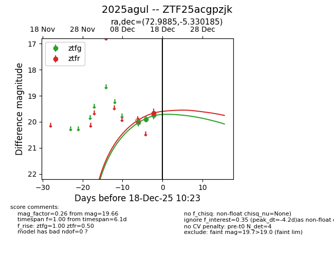
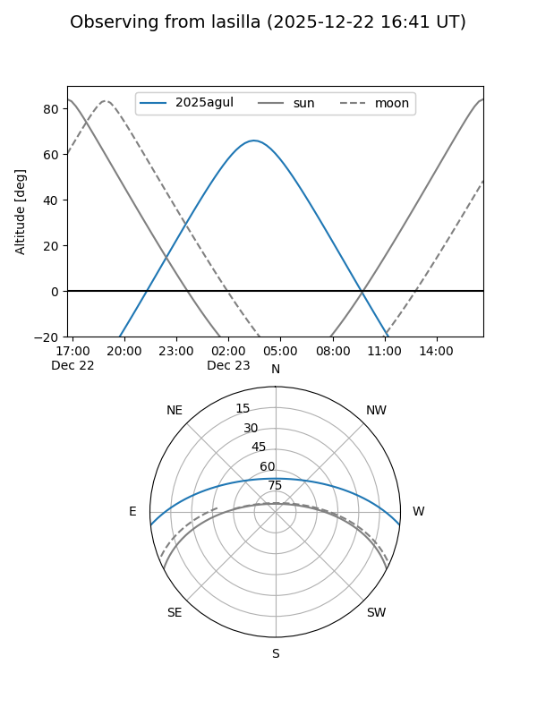
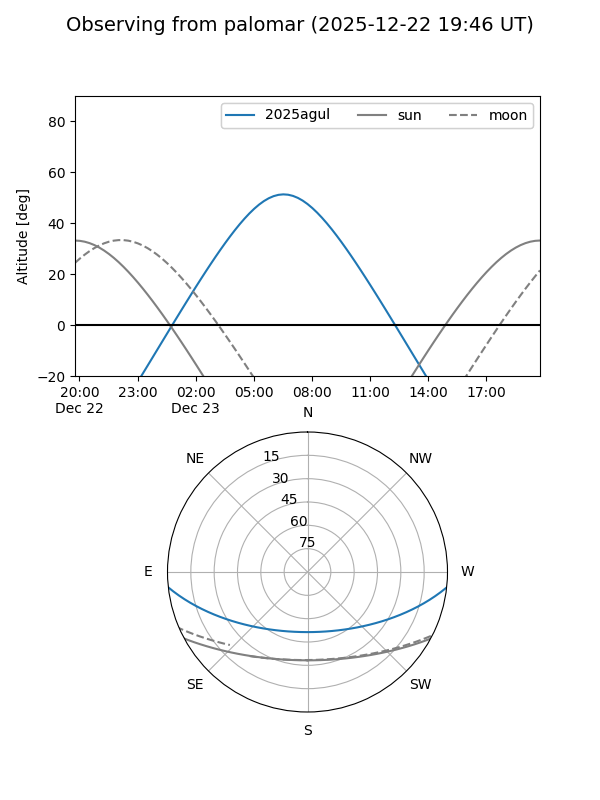

2025agul
Target 2025agul at 2025-12-31 18:00
Aliases and brokers:
FINK: link
Lasair: link
ALeRCE: link
TNS: link
YSE: link
alt names
ZTF25acgpzjk (ztf,fink_ztf)
2025agul (tns,yse)
PS25ktr (panstarrs)
Coordinates:
equatorial (ra, dec) = 72.9885,-5.33018
equatorial (HMS+DMS) = 04:51:57.23,-05:19:48.67
galactic (l, b) = (203.4990,-28.92733)
Flags:
Photometry:
last ztfg=19.82, ztfr=19.80
6 ztfg, 3 ztfr detections
Lightcurve

Visibility


Additional plots